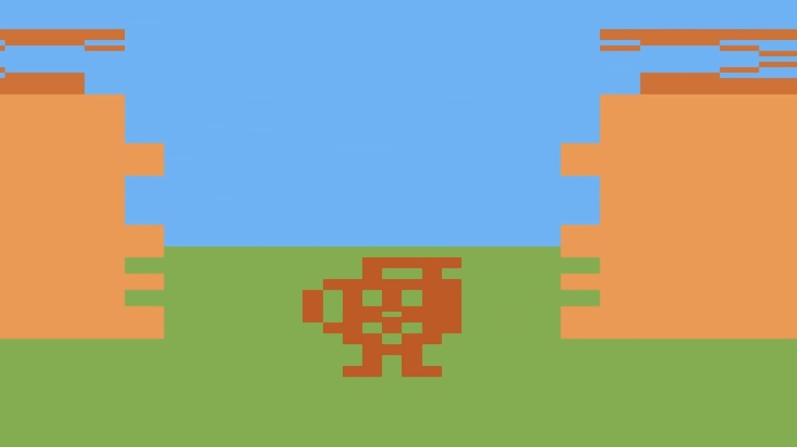

Review

Family Guy has had its ups and downs over the years, but one of the most enduring scenes from the early season is when the Kool-Aid man breaks into the courthouse and belts out his iconic "oh yeah!" catchphrase.
Anyways, this review is not about Family Guy, but about the Kool-Aid Man himself, who is the star of the eponymous video-game on the Atari 2600. Apparently, there was also an Intellivision version of this game, which was christened as one of the worst games on the system, but from what I've seen, they look nothing alike.
So, we get a little shot of the Kool-Aid man bursting through a brick wall before diving straight into the game, where we are greeted by several circles. Since this is an old-ass game, the circles obviously represent something; and indeed, these are no ordinary circles -- they are "thirsters," mischievous little critters that aim to sip up all the water from your swimming pool.
Touch one of the thirsters, and you will bounce around the screen like a pinball; unless, of course, they are in drinking mode, in which case you can kill them. Every once in a while an invincibility power up (water, kool-aid, or sugar) will zoom across the screen, and if you're lucky enough to touch it, you will hear a little jingle and become immune to the thirsters.
The player dies either when the timer runs out, or when all the water is drunk, whichever comes first.
So, what can I say about this game? The graphics are nice for what it is; it's very colorful and neurodivergent-looking. There's a little easter egg in there where you can change all the sprites to the programmers' names, which is kind of cool. The sound effects are very good, especially the "slurping" sound effect when the thirsters drink the water.
The Verdict
I give this game a solid 8.5/10; it's very entertaining, and I can see myself playing this for hours. While I want to say "don't drink the Kool-Aid," I must say, this Kool-Aid hits the sweet spot!~